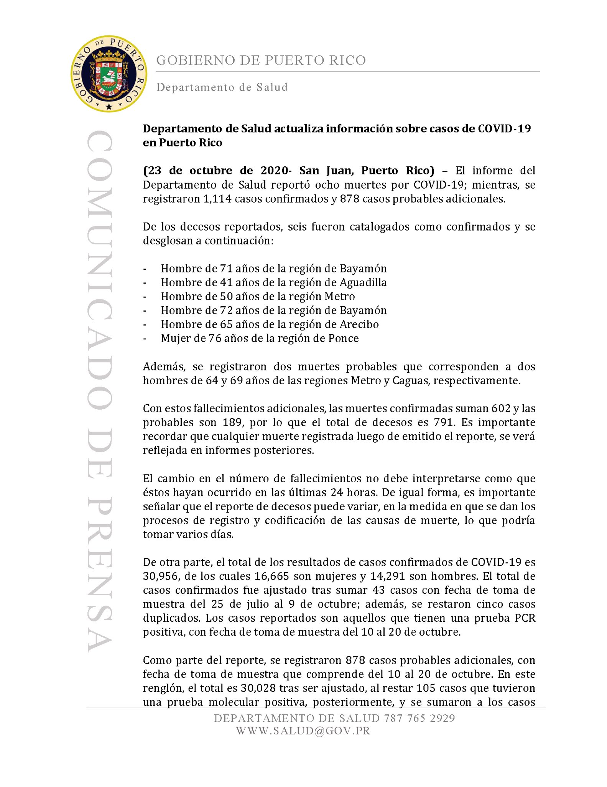
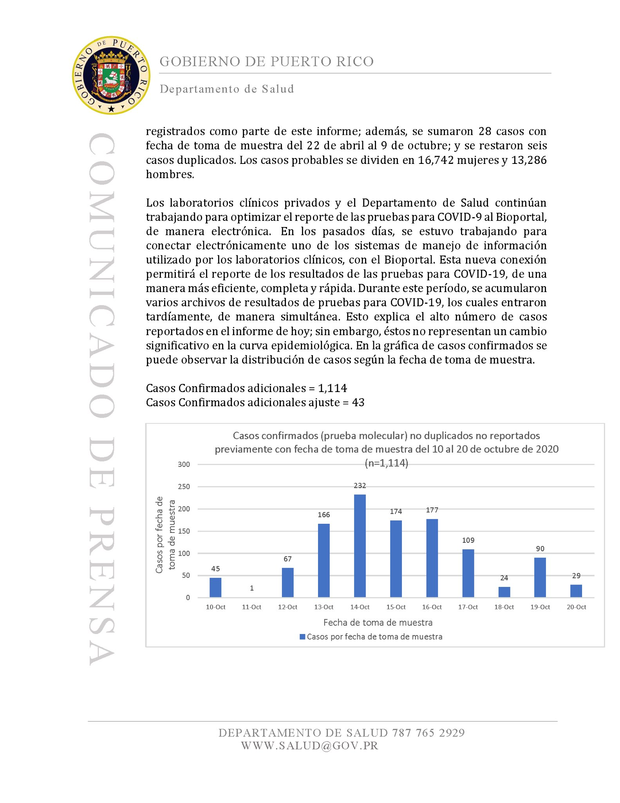
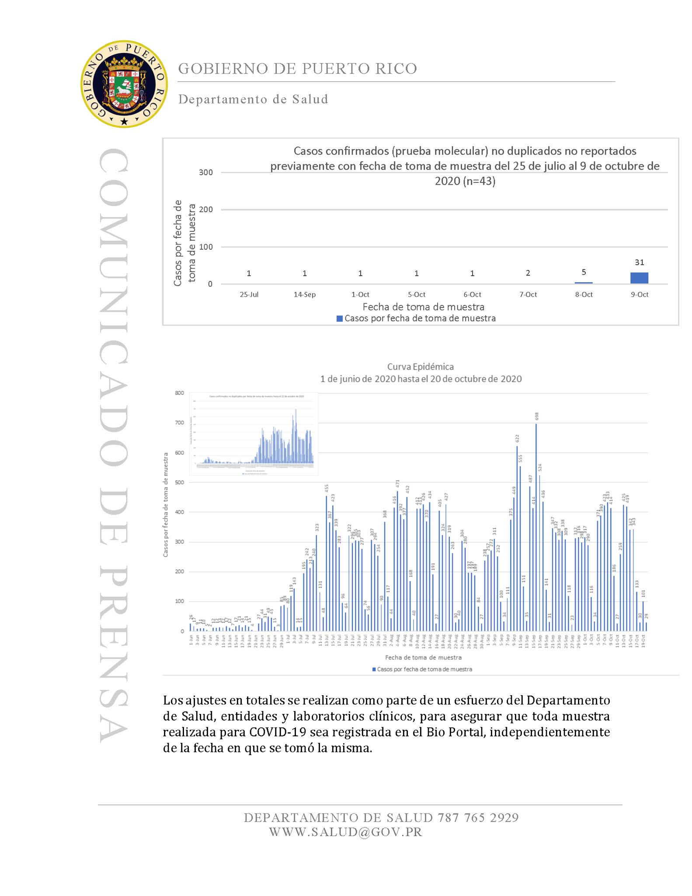
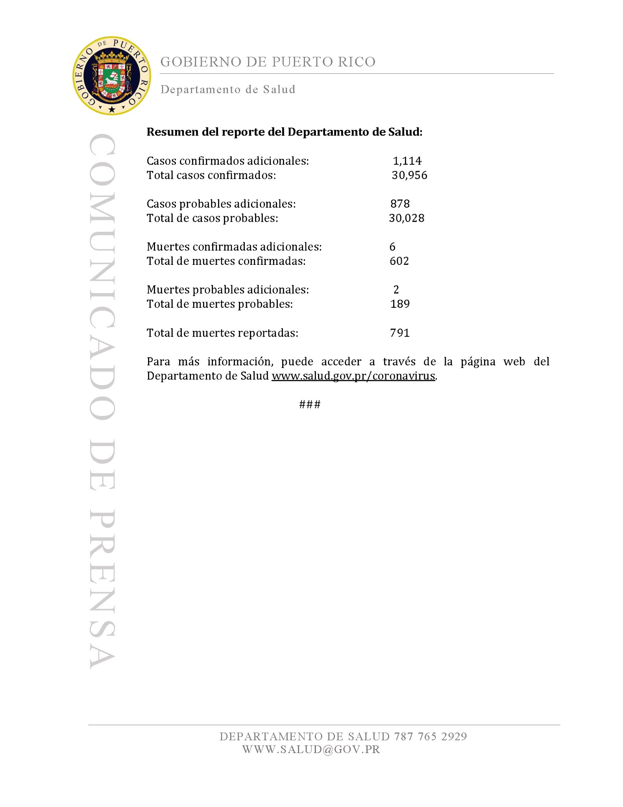

[PR] Update 10/23/20
Target Date: 10/23/20 Overview: Update via press release from PR Dept. of Salud    
. Contribution to milestone: Explain how the issue contributes to the overall milestone. Other benefits: Explain any side benefits we could get from completing this issue. Potential challenges: Explain any potential blockers. Editorial: The specific editorial content we expect to come out of this issue.
Comments
esquared commented on October 27, 2020 at 11:08 am
Data already captured. Patch note filed.
Translation: The report from the Dept of Health reported 8 deaths by COVID-19; meanwhile, 1114 confirmed cases and 878 additional probable cases were registered.[breakdown of 8 deaths, 2 of which are probable]With these additional deaths, confirmed deaths rose to 682 and probable deaths to 189 so that the total deceased are 791. It’s important to remember that any deaths registered after this report will be reflected in later reports.The change in the number of deaths should not be interpreted as those which might have occurred in the last 24 hours. IN the same manner, it’s important to note that the death reports can vary, owed to the registration process and coding of the cause of death, which can take various days.From another part, the total results of confirmed COVID-19 cases is 30,956, of which 16,665 are women and 14,291 are men. The total of the confirmed cases was adjusted after adding 43 cases with test-taking dates from July 25- October 9; additionally, 5 duplicate cases were subtracted. The reported cases are those which have a positive PCR test, with a test-taking date from Oct. 10- Oct. 20.As part of the report, 878 additional probable cases were registered, with the understood test-taking date between Oct. 10- Oct. 20. In this row, the total is 30,028 after being adjusted, when subtracting 105 cases which later had a positive molecular test and which are added to the registered cases as part of this report; additionally, 28 cases were added with the test-taking date of April 22 - Oct 9, and 6 duplicate cases were subtracted. The probable cases divide into 16,742 women and 13,286 men.The private clinical labs and the Dept. of Health continue working to optimize the reporting of the COVID-19 tests to the BioPortal in an electronic manner. In the past days, work is being done to electronically connect one of the systems which manages the information used by the clinical labs with the BioPortal. This new connection will permit the reporting of results of COVID-19 tests in a more efficient, complete, and rapid manner. During this period, various records of COVID-19 test results have accumulated, which were entered late, simultaneously. This explains the high number of cases reported in today’s report; however, this does not represent a significant change in the epidemiological curve. En the graph of confirmed cases, the distribution of cases according to the test-taking date can be observed.Additional Confirmed Cases = 1114 Additional Confirmed Cases Adjusted = 43Title of graph: Confirmed Cases(molecular test) not duplicated, not previously reported, with test-taking date from Oct. 10 - 20, 2020Title of 2nd graph: Confirmed cases(molecular test) not duplicated, not previously reported, with test-taking date from July 25 - Oct. 9, 2020The adjustments of totals are done as part of an effort by the Dept. of Health, entities, and clinical labs to ensure that all COVID-19 tests performed are registered in the BioPortal, independently of the date it was taken.Summary of Dept of Health Report: Additional confirmed cases: 1114 Total confirmed cases: 30,956Additional probable cases: 878 Total probable cases: 30,028Additional confirmed deaths: 6 Total confirmed deaths: 602Additional probable deaths: 2 Total probable deaths: 189Total reported deaths: 791